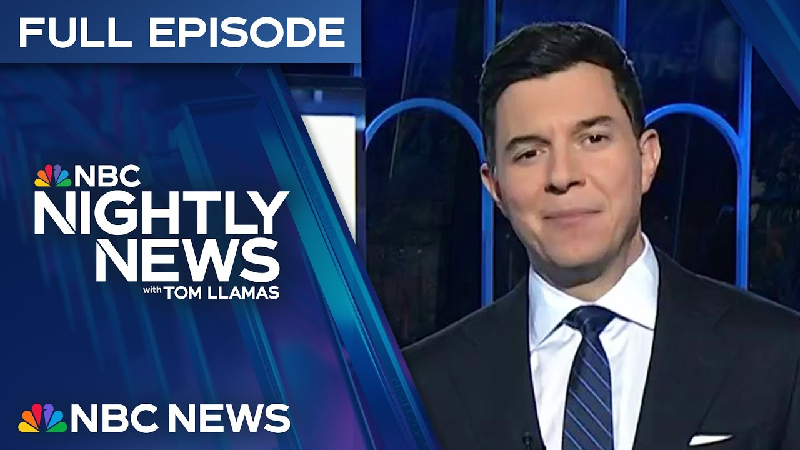

【NBC News 20250628 特朗普突然终止与加拿大的贸易谈判｜威胁伊朗｜特朗普在最高法院限制联邦法官权力的裁决中获胜】
Summary: Tonight's headlines: Trump abruptly ends trade talks with Canada over tech taxes, threatens Iran, and scores a Supreme Court victory limiting federal judges' power. Plus, updates on the Combmes trial, a subway fire, and a lifeguard impaled by a beach umbrella.
摘要： 今晚头条：特朗普因科技税突然终止与加拿大的贸易谈判，威胁伊朗，并在最高法院限制联邦法官权力的裁决中获胜。此外，还有Combmes案审判进展、地铁火灾及救生员被沙滩伞刺伤事件的更新。

⏱️ Estimated Reading Time: 35 min
📚 六级生词 📚 雅思生词 📚 托福生词 📚 专八生词 📚 SAT生词 📚 考研生词 📚 GRE生词 📚 高考生词
Tonight, the sudden explosion in the trade war.
今晚，贸易战突然升级。
President Trump drawing battle lines again with Canada.
特朗普总统再次与加拿大划清界限。
The president abruptly ending all US trade talks with Canada, furious over a new tax on American tech companies.
总统突然终止与加拿大的所有贸易谈判，因对美国科技公司的新税感到愤怒。
Trump saying, "We have all the cards."
特朗普称：“我们掌握所有筹码。”
The president also sending a new message to the Ayatollah and threatening to bomb Iran again.
总统还向伊朗最高领袖发出新信息，并威胁再次轰炸伊朗。
Plus, the landmark Supreme Court case limiting federal judges.
此外，最高法院里程碑式裁决限制联邦法官权力。
The impact on their ability to stop presidential executive orders.
这影响了他们阻止总统行政命令的能力。
What happens next with birthright citizenship and why one justice wrote no right is safe in the new regime the court creates.
出生公民权的后续影响，以及一位大法官为何写道“在新体制下没有权利是安全的”。
We take you inside the battle over the big beautiful bill.
我们带您了解围绕“大而美的法案”的斗争内幕。
Ryan Nobles on Capitol Hill getting answers on what's in, what's out, and why President Trump is now working the phones to get votes.
瑞安·诺布尔在国会山获取法案内容、排除项及特朗普为何打电话拉票的答案。
The jury set to get the case in the Shaun Diddy Combmes trial.
陪审团即将审理肖恩·迪迪·Combmes案。
The rap mogul's defense team in their closing arguments admitting Combmes was abusive and a swinger, but was not guilty of sex trafficking.
这位说唱大亨的辩护团队在结案陈词中承认Combmes有虐待行为且生活混乱，但未犯性交易罪。
The Subway Inferno caught on surveillance.
监控拍下地铁火灾惨剧。
How a casual commute rapidly turned into a fiery death trap.
一次平常的通勤如何迅速变成致命火海。
Danger at the beach.
海滩上的危险。
A teenage lifeguard just impaled by a beach umbrella.
一名青少年救生员被沙滩伞刺穿。
It happens more than you think.
这类事件比想象中更频繁。
Tonight, a survivor making it his life mission to make them safer.
今晚，一位幸存者将改进安全标准作为毕生使命。
Record auction.
创纪录的拍卖。
You won't believe how much this Michael Jordan rookie card just sold for.
您不会相信这张迈克尔·乔丹新秀卡拍出的天价。
And there's good news tonight.
今晚也有好消息。
The change of heart that turned three strangers into three amigos.
一场心脏移植让三位陌生人变成“三兄弟”。
Nightly News starts right now.
《晚间新闻》现在开始。
This is NBC Nightly News with Tom Yamz.
这里是汤姆·亚马兹主持的NBC《晚间新闻》。
And good evening.
晚上好。
Tonight, a new tech twist in the president's trade war with Canada.
今晚，总统对加拿大的贸易战出现科技新转折。
The president announcing he's ending trade talks with Canada effective immediately after Canada have moved to tax companies like Amazon, Google, Meta, and Uber.
总统宣布立即终止与加拿大的贸易谈判，因加拿大对亚马逊、谷歌、Meta和优步等公司征税。
President Trump writing the move is a direct and blatant attack on our country.
特朗普称此举是对美国的直接公然攻击。
All of it as the Supreme Court delivered a big win to the Trump administration, reigning in federal judges power to stop presidential executive orders.
与此同时，最高法院裁决限制联邦法官阻止总统行政令的权力，特朗普政府大获全胜。
Part of that battle over birthright citizenship.
这是关于出生公民权争议的一部分。
Our team is across it tonight and we start with Gabe Gutierrez at the White House.
我们的团队全面跟进，首先连线白宫的加布·古铁雷斯。
Tonight, President Trump vowing to expand his trade war, cutting off trade talks with Canada because of a new Canadian tax on American tech companies, calling it a direct and blatant attack on our country.
今晚，特朗普誓言扩大贸易战，因加拿大对美国科技公司征税而终止谈判，称这是对美国的直接公然攻击。
It's not going to work It's not going to work out well for Canada.
这对加拿大不会有好处。
They were foolish to do it.
他们这样做很愚蠢。
So, I said, "We're going to stop all negotiations with Canada right now until they straighten out their act."
因此我说：“我们将立即停止与加拿大的所有谈判，直到他们改正行为。”
The president says a new tariff on Canada would be announced within a week.
总统称一周内将宣布对加拿大的新关税。
We have all the cards.
我们掌握所有筹码。
We will every single one.
每一张都是。
We don't want to do anything bad, but uh they have uh economically we have such power over Canada.
我们不想采取激烈手段，但我们在经济上对加拿大拥有巨大影响力。
I'd rather not use it.
我宁愿不动用。
Canada is the second largest Canada is the second largest US trading partner.
加拿大是美国第二大贸易伙伴。
Its prime minister responding to the president's latest move late today.
加拿大总理今日晚些时候回应总统的最新行动。
We'll continue to We'll continue to conduct these complex negotiations in the best interest of Canadians.
我们将继续以加拿大人的最佳利益为核心进行复杂谈判。
It's a negotiation.
这是谈判。
The president today in a wide-ranging news conference also slammed Iran's supreme leader for his first public comment since the US air strikes on the country's nuclear program, insisting the US achieved nothing.
总统在广泛记者会上还抨击伊朗最高领袖，这是自美国空袭伊朗核设施后其首次公开表态，坚称美国一无所获。
You're a man of great faith, You're a man of great faith, man who's highly respected in his country.
你是有信仰的人，在国内备受尊敬。
You have to tell the truth.
你必须说实话。
He got beat to hell.
他被彻底击败。
And Israel was beat up, too.
以色列也受挫了。
While Iran's foreign minister today acknowledging US air strikes had inflicted significant and serious damage to its nuclear sites, President Trump was also asked if Iran tried to enrich uranium again to a concerning level.
伊朗外长今日承认美国空袭对其核设施造成重大破坏，特朗普还被问及若伊朗再次将铀浓缩至危险水平会如何应对。
Would you consider bombing the country again?
会考虑再次轰炸该国吗？
Without question. Absolutely.
毫无疑问，绝对会。
All Without question. Absolutely.
毫无疑问，绝对会。
All right, Gabe Gutierrez joins us now.
好的，现在连线加布·古铁雷斯。
Gabe, let's go back to that clash with Canada.
加布，回到与加拿大的冲突。
The threat of new tariffs not stopping Wall Street and some 401ks from reaching record highs today.
新关税威胁未阻止华尔街和部分401k账户今日创下新高。
Yes, Tom.
是的，汤姆。
Yes, Tom.
是的，汤姆。
The S&P 500 closed at a new record high.
标普500指数收盘创新高。
The tech heavy NASDAQ also just hit a new all-time high.
以科技股为主的纳斯达克指数也创历史新高。
Despite all that trade uncertainty and today, the Treasury Secretary also signaled the administration could push past its self-imposed July 9th deadline for more trade deals.
尽管贸易不确定性存在，财政部长今日还暗示政府可能推迟原定7月9日的贸易协议截止日期。
Tom.
汤姆。
Okay, Gabe Gutierrez, thanks for that.
好的，谢谢加布·古铁雷斯。
Now to the big day.
现在关注重要一天。
The Supreme Court delivering a major victory to President Trump, limiting the ability of individual federal judges to put the brakes on his executive orders.
最高法院赋予特朗普重大胜利，限制联邦法官阻止其行政令的权力。
Laura Jared has this one tonight.
劳拉·贾里德带来报道。
A sweeping tonight.
今晚的全面胜利。
A sweeping victory for the president in his battle with federal judges who've blocked key portions of his agenda.
总统在与阻挠其议程关键部分的联邦法官的斗争中大获全胜。
This was a big This was a big decision.
这是重大裁决。
An amazing decision.
惊人裁决。
The justices in a The justices in a six-3 ruling significantly limiting the power of individual lower court judges to issue decisions with nationwide effect.
大法官以6比3的裁决大幅限制下级法院法官发布全国性禁令的权力。
those judges handing down more than two dozen injunctions blocking Trump executive actions as of May from military service to federal funding to the focus of the current case, a nationwide injunction halting his executive order banning birthright citizenship.
截至5月，这些法官已发布二十多项禁令，阻止特朗普从军人服役到联邦资金等多方面行政令，本案焦点是暂停其废除出生公民权的全国性禁令。
We've seen a handful of We've seen a handful of radical left judges effectively try to overrule the rightful powers of the president to stop the American people from getting the policies that they voted for in record numbers.
我们看到少数激进左派法官试图推翻总统的合法权力，阻止美国人民获得他们以创纪录票数支持的政策。
Justice Amy Con Barrett writing for the conservative majority today, finding lower court judges have gone too far with their nationwide orders, writing, "When a court concludes that the executive branch has acted unlawfully, the answer is not for the court to exceed its power, too."
保守派大法官巴雷特今日撰文指出下级法院法官的全国性禁令越权，写道：“当法院认定行政部门行为违法时，解决方案不是法院也越权。”
The ruling sparking a pointed clash between the justices.
裁决引发大法官间尖锐冲突。
Liberal Justice Sonia Sotomayor dissenting saying today's decision is not just egregiously wrong.
自由派大法官索托马约尔反对称今日裁决不仅严重错误。
It is also a travesty for the rule of law.
还是对法治的嘲弄。
The high court not asked to rule on the merits of the president's effort to ban the birthright citizenship provided under the constitution to the babies of undocumented immigrants.
最高法院未被要求就总统废除宪法赋予无证移民子女出生公民权的努力作出实质裁决。
That was meant That was meant for the babies of slaves.
该条款本是为奴隶子女设立。
It wasn't meant for people trying to scam the system and come into the country on a vacation.
而非为那些试图钻空子以旅游入境的人。
One of the undocumented pregnant women who originally sued the Trump administration with her baby now due in two weeks, asking to remain anonymous today, telling us she is very sad, not knowing if her child will be granted citizenship, but going to keep fighting.
一位最初起诉特朗普政府的无证孕妇（两周内临产）要求匿名，表示她很悲伤，不知孩子能否获得公民身份，但会继续抗争。
Meanwhile, the high court also waiting into fresh clashes over the First Amendment.
与此同时，最高法院还介入第一修正案的新冲突。
The conservative majority finding Maryland parents are now allowed to withdraw their children from public school on days that books with gay and transgender themes are taught and upholding a Texas law requiring the users of websites with sexually explicit material provide identification verifying they are over 18.
保守派多数裁定马里兰州家长可在教授同性恋和跨性别主题书籍时让孩子退学，并维持德州要求成人网站用户提供年龄验证的法律。
And with that, Laura Jarrett joins And with that, Laura Jarrett joins us now in studio.
现在劳拉·贾里德加入演播室。
So Laura, walk our viewers through what happens now with birthright citizenship.
劳拉，向观众说明出生公民权的后续进展。
Yeah, Tom, we're Yeah, Tom, we're already seeing some action in the lower courts tonight.
是的汤姆，今晚下级法院已有动作。
people scrambling to try to get judges to agree with them that they still need nationwide relief under this decision, which means this is eventually going to end up right back at the Supreme Court.
各方正争取法官认同他们仍需全国性救济，这意味着此事最终将回到最高法院。
Tom.
汤姆。
All right, Laura All right, Laura Jerus.
好的，劳拉·杰鲁斯。
Laura, thank you.
谢谢劳拉。
Also tonight, President Trump tonight making an all-out push to pass his big beautiful bill, cancelling his weekend travel to work the phones, but can he convince enough Republican senators to get on board?
今晚特朗普全力推动通过“大而美的法案”，取消周末行程以电话游说，但他能否说服足够多共和党参议员支持？
Ryan Nobles has been tracking the fastmoving developments all day from the Hill.
瑞安·诺布尔全天在国会山追踪快速进展。
Tonight, new battle lines over what President Trump calls his big beautiful bill.
今晚，围绕特朗普所称“大而美的法案”的新战线。
It seems like there's a lot of thorny issues that you've got to work through.
似乎有许多棘手问题需解决。
Is it This is called what what This is called what what I think you guys have said, making the sausage.
这就是你们所说的“香肠制作”过程吧？
Yeah. So, we're we're making Yeah. So, we're we're making the sausage right now.
是的，我们正在“制作香肠”。
President Trump President Trump making a lastminute sales pitch for this massive bill that delivers on a slew of his campaign promises.
特朗普为这项兑现多项竞选承诺的大规模法案作最后游说。
It's a great It's a great bill.
这是伟大的法案。
It's a massive tax cut.
包含大规模减税。
from a $4.5 trillion extension of the Trump tax cuts to hundreds of billions of dollars in funding for his mass deportation plan, plus eliminating taxes on tips and overtime.
从4.5万亿美元的特朗普减税延期到数千亿的大规模驱逐计划资金，还包括取消小费和加班税。
It's a great bill. It's a It's a great bill. It's a popular bill, but we'll get no Democrats only because they don't want to vote for Trump.
这是伟大且受欢迎的法案，但不会有民主党支持，只因他们不想为特朗普投票。
They have Trump derangement syndrome at levels never seen before.
他们患有前所未有的“特朗普精神错乱症”。
Democrats slamming the Republican bill's cuts to social programs like food stamps and Medicaid, including imposing work requirements for those benefits.
民主党抨击共和党法案削减食品券和医疗补助等社会福利，并增加工作要求。
Democrats say that hurts vulnerable people.
民主党称这伤害弱势群体。
Of course, Americans hate this Of course, Americans hate this bill.
当然，美国人讨厌这法案。
It steals their Medicaid.
它窃取医疗补助。
It jacks up their premiums.
抬高保费。
But tonight, it's But tonight, it's Republicans that cannot get on the same page.
但今晚是共和党内部无法统一意见。
North Carolina's Tom Tillis concerned about the impacts on rural hospitals as we're moving and trying to as we're moving and trying to uh to make changes.
北卡罗来纳州的汤姆·提利斯担忧对乡村医院的影响，称正努力调整。
Wisconsin's Ron Johnson telling us the bill does not cut enough spending.
威斯康星州的罗恩·约翰逊称法案削减开支不足。
Is there any one Is there any one particular thing that you're still fighting for at this point?
目前是否有特别争取的内容？
President President Trump said he wanted the Senate to make the bill better.
特朗普称希望参议院完善法案。
I'd like to make it much better.
我想让它更好。
Whatever the Senate passes Whatever the Senate passes must once again pass the House.
参议院通过后仍需众议院再次通过。
We press Speaker Mike Johnson.
我们追问议长迈克·约翰逊。
Could they be Could they be surprised by what the Senate sends them back?
会否对参议院返回的内容感到意外？
Well, look, I I I haven't Well, look, I I I haven't slept maybe six hours this week because I'm on the phone all the time with members.
我本周可能只睡六小时，因一直在与议员通话。
The vast majority of Republicans support this bill and President Trump said that he's open to moving the July 4th deadline.
绝大多数共和党人支持该法案，特朗普称可推迟7月4日截止期限。
The Senate could begin voting as soon as tomorrow.
参议院最快明日开始投票。
Tom Ryan Nobles for us tonight.
汤姆，瑞安·诺布尔报道。
Ryan, we thank you.
谢谢瑞安。
The jury in the Shawn Diddy Combmes trial expected to start deliberating on Monday as the defense delivered closing arguments today.
肖恩·迪迪·Combmes案的陪审团预计周一开始审议，辩护方今日作结案陈词。
Combmes, who was charged with sex trafficking and racketeering, could face up to life in prison.
Combmes被控性交易和诈骗罪，或面临终身监禁。
Khloe Malas was inside the courtroom today.
克洛伊·马拉斯今日在法庭内。
Tonight, Shawn Combmes's defense team making their closing arguments in his criminal trial.
今晚，Combmes的辩护团队在刑事审判中作结案陈词。
As six of Commes's children looked on, his attorney, Mark, telling the jury that this is a tale of two trials and badly exaggerated.
Combmes的六名子女在场，其律师马克告诉陪审团此案被严重夸大且存在双重标准。
Combmes is charged with two counts of transportation to engage in prostitution, two counts of sex trafficking, and one count of racketeering.
康布斯被控两项运送他人从事卖淫罪、两项性交易罪和一项敲诈勒索罪。
Agnif trying to discredit allegations of kidnapping, bribery, and arson, but prosecutors painting a different picture over the last seven weeks, calling 34 witnesses, ranging from alleged victims and escorts to Combmes's former assistants, and telling jurors in their closing argument that Combmes used power, violence, and fear to get what he wanted, alleging he ran a criminal enterprise, calling it Combmes's kingdom where everyone was there to serve him.
阿尼夫试图反驳绑架、贿赂和纵火的指控，但检察官在过去七周内描绘了另一幅图景，传唤了34名证人，包括据称的受害者和陪侍人员以及康布斯的前助手，并在结案陈词中告诉陪审团，康布斯利用权力、暴力和恐惧来达到目的，指控他经营着一个犯罪集团，称之为“康布斯的王国”，所有人都为他服务。
Prosecutors say Combmes physically abused and sex-trafficked former girlfriends Cassie Ventura and another woman, forcing them to take drugs and have sex with male escorts.
检察官称，康布斯曾对前女友卡西·文图拉和另一名女性实施身体虐待和性交易，强迫她们吸毒并与男性陪侍发生性关系。
But Combmes's lawyer saying that there is no evidence to support this and that it was a swinger's lifestyle.
但康布斯的律师表示，没有证据支持这一说法，并称这是一种开放式关系的生活方式。
Also playing this hotel security video of Combmes beating Ventur in 2016, saying if he was charged with domestic violence, he would have pled guilty, adding it's a state crime.
还播放了2016年康布斯殴打文图尔的酒店监控视频，称如果他被控家暴，他会认罪，并补充说这是州级罪行。
Going on to call Ventur the real winner for walking away from her 2023 civil lawsuit against Cols with a $30 million settlement.
接着称文图尔是真正的赢家，因为她以3000万美元和解金撤回了2023年对科尔斯提起的民事诉讼。
They basically said, "My client did a lot of bad things, but he's not charged with those bad things. He's charged with these very specific federal crimes and the government can't prove those."
他们基本上说：“我的当事人做了很多坏事，但他没有被指控犯下那些坏事。他被指控的是这些非常具体的联邦罪行，而政府无法证明这些。”
Tom, Monday morning, the judge is going to charge the jury and then they're going to begin deliberations.
汤姆，周一上午法官将向陪审团作出指示，然后他们将开始审议。
Chloe Malos first. Khloe, thank you.
克洛伊·马洛斯首先报道。克洛伊，谢谢。
And breaking tonight, one of the escaped New Orleans inmates has been captured.
今晚突发新闻，新奥尔良一名逃犯已被抓获。
Antoine Massie has been on the run for more than a month and is the ninth inmate taken back into custody.
安托万·马西已潜逃一个多月，是第九名被重新拘留的逃犯。
You may remember these videos of him surfaced online in the days after his escape.
你可能还记得他越狱后几天网上流传的这些视频。
The Orleans Parish Sheriff's Office says only one more inmate remains on the run.
奥尔良教区警长办公室表示，只剩一名逃犯仍在逃。
Now to our series, the cost of denial and the dispute between a healthcare giant and a world-renowned cancer hospital.
现在进入我们的系列报道，关于一家医疗巨头与世界知名癌症医院之间的纠纷及其代价。
Aaron McLaclin tonight on the patients now caught in the middle.
今晚，亚伦·麦克拉克林报道那些被卷入其中的患者。
Daddy from work. Diagnosed with a rare and curable stomach cancer two and a half years ago, Lee Castler turned to New York-based Memorial Sloan Kettering Cancer Center.
爸爸下班了。两年半前被诊断出患有一种罕见但可治愈的胃癌后，李·卡斯勒求助于纽约的纪念斯隆-凯特琳癌症中心。
Do you feel like your life depends on being treated here? Yes. Yes. Yes. Yes. No question about it.
你是否觉得你的生命取决于在这里接受治疗？是的。是的。毫无疑问。
Known as MSK, it's one of the top cancer centers in the country.
MSK是美国顶尖的癌症中心之一。
Now mired in a contract dispute with one of the nation's largest health insurers, United Healthcare.
如今，它陷入与全美最大健康保险公司之一联合健康保险的合同纠纷。
One that Castler says has left him completely confused.
卡斯勒表示，这让他完全困惑。
If this contract ends. Mhm. Do you know what that means for you? Not yet.
如果这份合同终止。嗯。你知道这对你意味着什么吗？还不知道。
The current contract expires Monday.
现有合同将于周一到期。
MSK will soon be out of network for thousands of MSK patients like Castler.
MSK将很快退出卡斯勒等数千名患者的保险网络。
The two sides in a bitter and public feud over reimbursement rates.
双方因报销费率问题公开激烈争执。
Quite frankly, UHC is prioritizing profits over patients.
坦率地说，联合健康保险将利润置于患者之上。
MSK's chief medical officer saying United pays them at rates lower than other major insurers.
MSK的首席医疗官表示，联合健康保险的支付费率低于其他主要保险公司。
We're really just asking for sustainable rates that really cover the cost of that quality cancer care that we give.
我们只是要求可持续的费率，以覆盖我们提供的高质量癌症治疗成本。
United says its priorities are helping patients access the quality care they need while making health care as affordable as possible.
联合健康保险表示，其首要任务是帮助患者获得所需的高质量护理，同时尽可能降低医疗成本。
UHC's chief medical officer told us Lee Castler should not worry.
联合健康保险的首席医疗官告诉我们，李·卡斯勒不必担心。
He will be able to keep his doctor as long as he needs to be treated for his active cancer care diagnosis.
只要他需要为当前的癌症诊断接受治疗，他就能继续看他的医生。
New York State law requires continuity of care for patients like Castler in active treatment for 90 days.
纽约州法律要求为卡斯勒等正在接受治疗的患者提供90天的连续性护理。
But this is why communication is key.
但这就是沟通的关键所在。
Look at this right here on United Healthcare's own website.
看看联合健康保险官网上的这段话。
It says if you are in the middle of treatment with an MSK provider at the time they go out of network, you may qualify for continuity of care.
上面写着，如果在MSK退出网络时你正在接受其治疗，你可能符合连续性护理的条件。
May qualify. The answer is I should.
“可能符合”。答案是我应该符合。
But until I see that in writing officially, you know, it's uncertain.
但在看到正式书面文件之前，你知道，这还不确定。
As recently as yesterday, MSK also said there was no certainty for its patients.
就在昨天，MSK也表示其患者尚无确定性保障。
Right now, there are approximately 19,000 patients who are at risk of having their cancer care disrupted.
目前约有1.9万名患者的癌症治疗面临中断风险。
United says MSK continues to share inaccurate information regarding continuity of care, creating additional fear.
联合健康保险表示，MSK仍在传播关于连续性护理的不准确信息，引发更多恐慌。
Care is not being stopped for patients undergoing cancer treatment.
癌症患者的治疗并未停止。
We do not deny continuity of care requests that are in active treatment.
我们不会拒绝正在接受治疗的患者的连续性护理请求。
And we will continue to pay claims throughout their course of treatment.
我们将在整个治疗过程中继续支付理赔。
But this was news to Castler and MSK.
但这对卡斯勒和MSK来说是新闻。
Late today after pressed for clarification, United Healthcare sent NBC News this new statement saying after the 90 days required by law for eligible individuals, the continuity of care period could be longer depending on the individual's condition and if they remain in ongoing treatment with their provider.
今天晚些时候，在被要求澄清后，联合健康保险向NBC新闻发送了一份新声明，称在法律规定的90天后，符合条件的个人的连续性护理期可能会更长，具体取决于个人病情以及是否继续接受其提供者的治疗。
The words could and depending, leaving Castler uncertain and unsettled about his care continuing past the 90 days.
“可能”和“取决于”这些词让卡斯勒对90天后的护理感到不确定和不安。
I have received no such assurance. Nothing nothing in writing. Absolutely not.
我没有收到任何此类保证。没有任何书面文件。完全没有。
You're in the dark. Yes. You're in the dark. Yes. Yes. And that's that's stressful.
你一无所知。是的。一无所知。是的。这很有压力。
You know, Tom Lee says United told him it is sending letters to patients by the end of the month.
汤姆·李表示，联合健康保险告诉他将在月底前向患者发送信件。
He's hoping that will be the assurance in writing he's been waiting for.
他希望这能成为他一直在等待的书面保证。
Yeah, so many patients confused tonight.
是的，今晚有太多患者感到困惑。
All right, we thank you for that, Aaron.
好的，亚伦，谢谢你的报道。
Still ahead, how umbrellas can quickly become missiles.
接下来，遮阳伞如何迅速变成“导弹”。
Just ask this man his recovery and simple solution about how to keep people safe.
听听这名男子的康复经历和他提出的保障安全的简单解决方案。
That's next.
稍后继续。
We're back now with an urgent warning for beachgoers this summer after a freak accident left one New Jersey lifeguard hospitalized.
现在回到节目，今年夏天对海滩游客的紧急警告，此前一起离奇事故导致新泽西一名救生员住院。
Julie Circin reports on the new safety standard that could keep your umbrella in the sand and out of the air.
朱莉·西尔辛报道了一项新安全标准，它能让你的遮阳伞牢牢插在沙中而非飞向空中。
Tonight, this 18-year-old lifeguard is speaking out after a freak accident on a New Jersey beach.
今晚，这名18岁的救生员在新泽西海滩发生离奇事故后发声。
Alex, who only wanted us to use her first name to protect her privacy, describing the frightening moments when she was impaled by a beach umbrella this week.
亚历克斯（为保护隐私仅使用名字）描述了本周她被海滩遮阳伞刺中的可怕时刻。
It was a fever dream. Like, it still doesn't feel real.
那像一场高烧中的梦。至今仍感觉不真实。
361, the umbrella is moving in the left armpit.
361，遮阳伞刺入了左腋下。
First responders rushed to the scene.
急救人员迅速赶到现场。
They cut the umbrella on both ends so they could remove that part of it.
他们切断了遮阳伞两端以取出刺入的部分。
Alex is now out of the hospital and beginning her road to recovery.
亚历克斯现已出院，开始康复之路。
I'm just going to go back and keep living life as normal.
我只想回归正常生活。
It's a story all too familiar for Ed Quigley.
这对埃德·奎格利来说是个熟悉的故事。
An umbrella is a javelin with a sail attached.
遮阳伞就是带帆的标枪。
Ed nearly died after being struck in the eye by a rogue beach umbrella in 2015.
2015年，埃德被一把失控的海滩遮阳伞击中眼睛，险些丧命。
Since then, he's made it his mission to improve beach umbrella safety.
此后，他将改善海滩遮阳伞安全作为自己的使命。
Now, how difficult is it to pull this umbrella out without the anchor?
现在，没有锚定装置时拔出这把伞有多难？
Nothing at all.
毫不费力。
Pointing beachgoers to a new voluntary safety standard from the Consumer Product Safety Commission.
他引导海滩游客关注消费品安全委员会的新自愿安全标准。
Basically, what it is is an anchor device that provides 75 lbs of resistance to lift.
本质上，这是一种能提供75磅抗抬升力的锚定装置。
This is actually the anchor. The umbrella goes through the center.
这就是锚定器。遮阳伞穿过中心。
It's a little more involved than what you might be used to.
它比常见的装置复杂一些。
We want to take this other loop up here and then we just finish it off a little bit on the sides.
我们需要固定上方的另一个环，然后在两侧稍作调整。
The result, shade that's much safer.
结果是更安全的遮阳效果。
Now, if anybody tries to lift this umbrella, it's about 120 lbs. So, it's not going anywhere.
现在，如果有人试图抬起这把伞，需要约120磅的力。所以它不会移动。
Julie Seren, NBC News, Wildwood, New Jersey.
NBC新闻，朱莉·塞伦，新泽西州怀尔德伍德报道。
And when we return, the nightmare on a subway.
稍后回来，地铁上的噩梦。
Terrifying security video showing a man lighting this subway car on fire.
一段可怕的监控视频显示一名男子在地铁车厢内纵火。
Plus, why the University of Virginia's president says he's stepping down.
此外，弗吉尼亚大学校长为何宣布辞职。
That's next.
接下来继续。
Back now with the University of Virginia's president announcing he's stepping down after pressure from the Trump administration.
现在回到节目，弗吉尼亚大学校长宣布在特朗普政府施压下辞职。
James Ryan writing an open letter to the school, saying he cannot fight the federal government to save his own job.
詹姆斯·瑞安在给学校的公开信中表示，他无法为保住职位与联邦政府对抗。
It comes after the New York Times reported the Trump Justice Department demanded he resign amid an investigation into the school's DEI programs, according to three people that were briefed on the matter.
此前《纽约时报》报道，据三位知情人士透露，特朗普政府的司法部在对该校DEI项目调查期间要求他辞职。
Also tonight, a truly terrifying moment on a subway.
今晚还有一则地铁上的恐怖时刻。
Look at this. In the middle of the aisle, a man pouring gasoline all over the subway car in Soul, South Korea.
看这里。在韩国首尔的地铁车厢过道上，一名男子倾倒汽油。
The people on board scrambling to get out. Some people slipping and falling before it goes up in flames.
乘客们争相逃离。有人在起火前滑倒。
Officials in South Korea say six people were injured and that suspect was charged.
韩国官员表示六人受伤，嫌疑人已被起诉。
And guess how much this card is worth? $2.5 million.
猜猜这张卡价值多少？250万美元。
That's how much the winning bidder paid at Fel Williams auction house Jupiter to take home this autograph Michael Jordan rookie card from the 86 to87 season.
这是买家在费尔·威廉姆斯拍卖行“木星”专场为这张86-87赛季迈克尔·乔丹亲笔签名新秀卡支付的金额。
It's the most expensive Jordan rookie card ever sold and the third most expensive Jordan card sale that is known to the public.
这是史上最贵的乔丹新秀卡，也是公开交易中第三贵的乔丹卡。
Okay, when we come back, heart-to-heart, the three men waiting for heart transplants gaining something else in the meantime. A lifelong friendship.
好的，稍后回来，三个等待心脏移植的男子在此过程中收获了另一份礼物——终生友谊。
The good news about this unlikely trio. That's next.
关于这个意外三人组的好消息。接下来继续。
Finally tonight, there's good news out of San Diego about three men who all needed heart transplants.
最后是来自圣地亚哥的好消息，关于三名需要心脏移植的男子。
In their journey to live longer, they found each other. Here's Priscilla Thompson.
在延长生命的旅程中，他们找到了彼此。以下是普莉希拉·汤普森的报道。
We've got some news.
我们有个消息。
It was the news 41-year-old Martine Ortiz had been waiting months to hear.
这是41岁的马丁·奥尔蒂斯等待数月想听到的消息。
We have a heart for you.
我们为你找到了心脏。
Really? Martine shaking his head in disbelief before bursting into tears.
真的吗？马丁难以置信地摇头，随后泪流满面。
What went through your mind? I couldn't believe it. I just felt excited.
你当时在想什么？我无法相信。只觉得兴奋。
And he wasn't the only patient happy to hear it.
而他不是唯一为此高兴的患者。
I ran straight ahead to his room, congratulate him.
我直接冲进他的房间祝贺他。
You see, Martine Estabbon Gonzalez and Gabriel Casas had been at Sharp Memorial Hospital in San Diego since February, all awaiting heart transplants.
原来，马丁、埃斯特班·冈萨雷斯和加布里埃尔·卡萨斯自二月起就在圣地亚哥的夏普纪念医院等待心脏移植。
The trio affectionately dubbed the three amigos with broken hearts.
三人被亲切称为“心碎三兄弟”。
When you all found each other, did it change your mood at all? Yes, of course.
当你们相遇后，心情有变化吗？当然。
You wake up.
你醒来。
Yes, of course.
是的，当然。
You wake up depressed.
你醒来时很沮丧。
But now you have a like I want to go see Martin or I want to go see.
但现在你有了一种想法，比如我想去见马丁或我想去见。
Yeah.
是的。
Do you have something else to Yeah.
你还有别的事要做吗？
Do you have something else to do besides wait?
除了等待，你还有别的事可做吗？
Then one by one each got their heart.
然后他们一个接一个地获得了心脏。
First Estabbon in March, then Gabriel in April, and finally Martin ringing the victory bell Thursday.
首先是埃斯塔邦在三月份，接着是加布里埃尔在四月份，最后是马丁在周四敲响了胜利的钟声。
What has this brotherhood meant to you all?
这段兄弟情对你们所有人意味着什么？
It meant everything because we we needed each other when we're there.
它意味着一切，因为我们在那里时彼此需要。
Just made me feel alive.
这让我感觉活着。
Just made me feel alive again.
这让我再次感觉活着。
Brothers and heart.
兄弟和心脏。
No more Brothers and heart.
不再有兄弟和心脏。
No more broken hearts.
不再有心碎。
Finding something perhaps.
也许找到了什么。
Finding something perhaps even more rare than a new heart at their age.
也许找到了比在他们这个年纪获得一颗新心脏更罕见的东西。
New friendships to last a lifetime.
持续一生的新友谊。
Priscilla Thompson, NBC News.
普莉希拉·汤普森，NBC新闻。
And that's Nightly News for this Friday.
以上就是本周五的《晚间新闻》。
I'm Tom Yamos.
我是汤姆·亚莫斯。
Thanks so much for watching.
非常感谢您的观看。
Make sure to catch Jose and Hie this weekend.
别忘了本周末收看何塞和希的节目。
And remember, tonight and always, we're here for you.
请记住，今晚和永远，我们都在这里为您服务。
Good night.
晚安。
[Music]
[音乐]
We thank you for watching and remember, stay updated on breaking news and top stories on the NBC News app or watch live on our YouTube channel.
感谢您的观看，请记住，您可以通过NBC新闻应用获取突发新闻和头条新闻的最新动态，或在我们的YouTube频道观看直播。